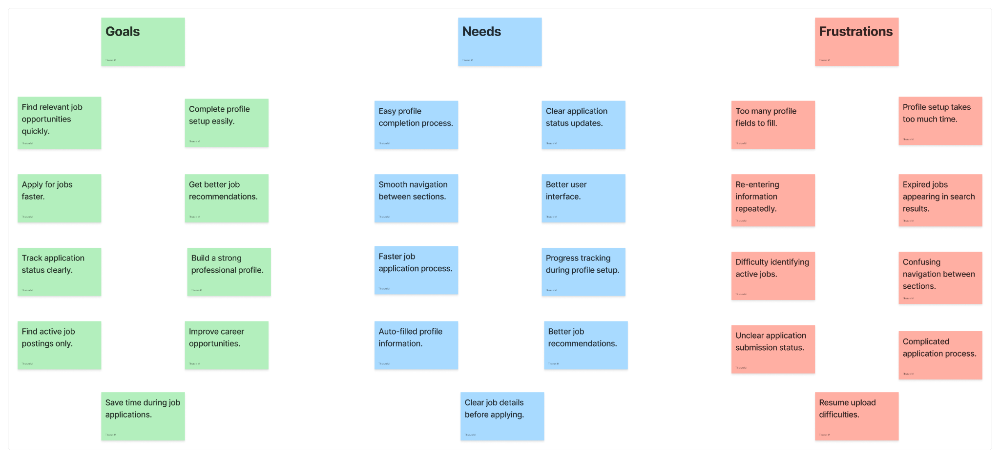
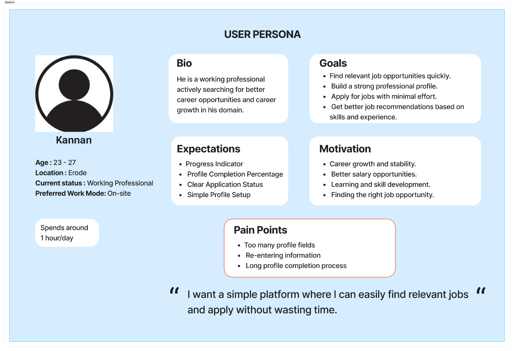
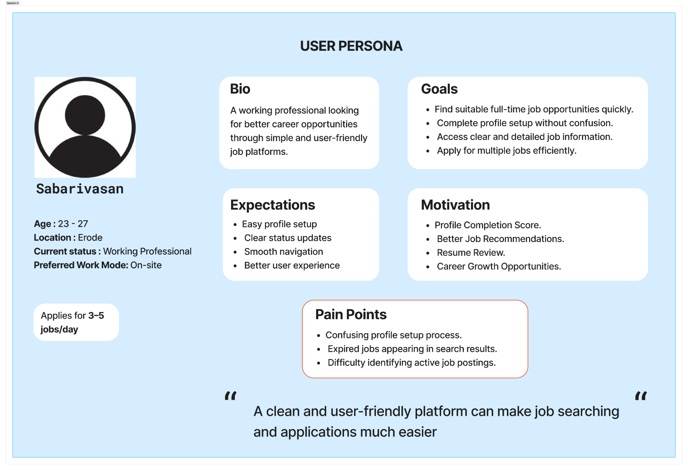
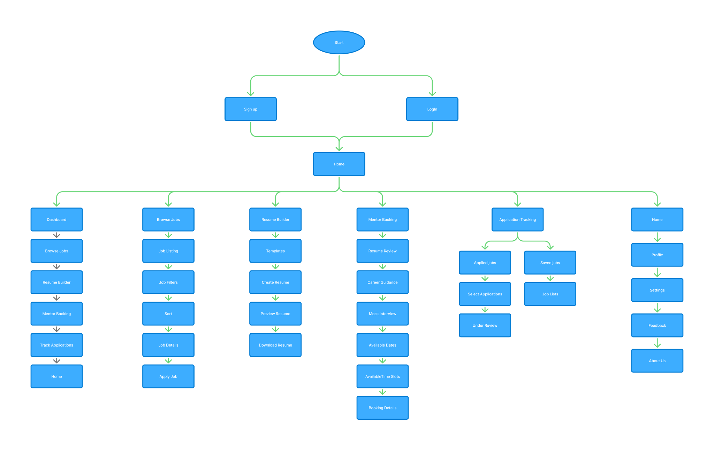
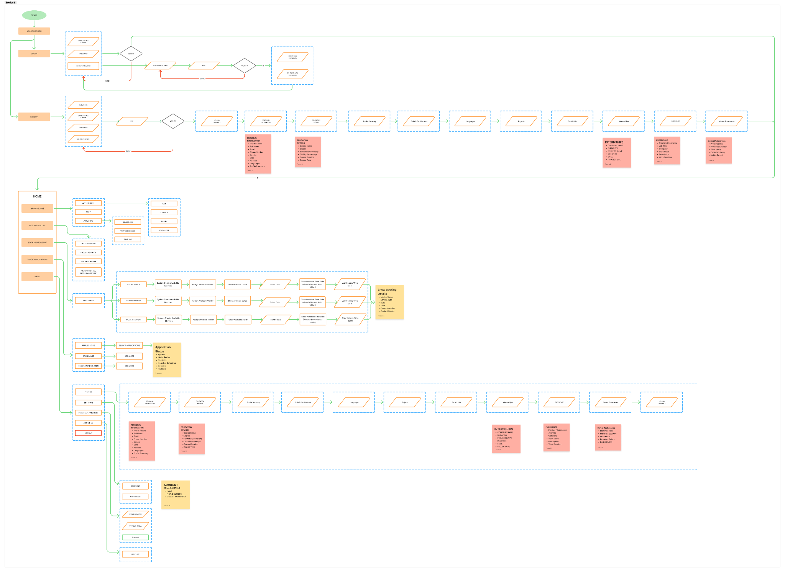
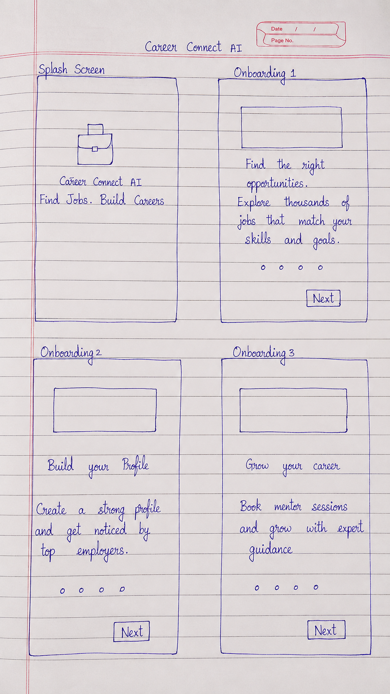
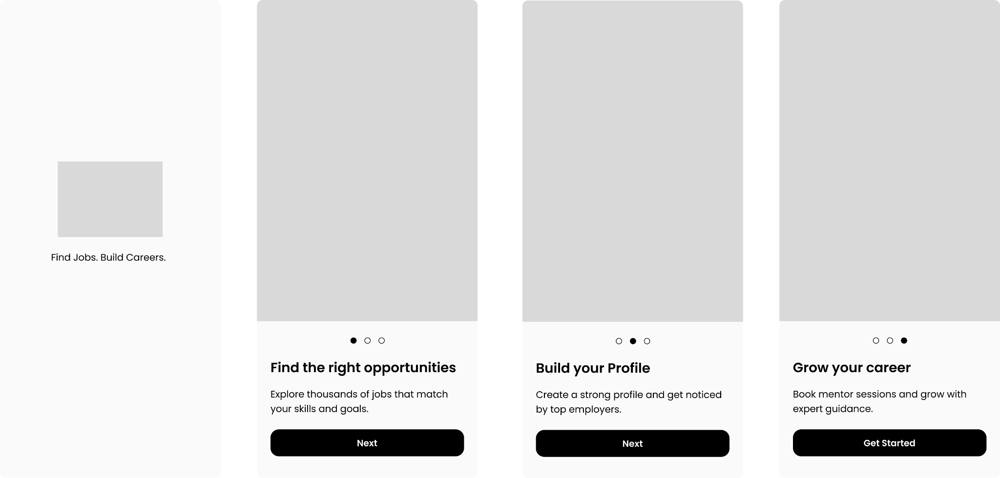
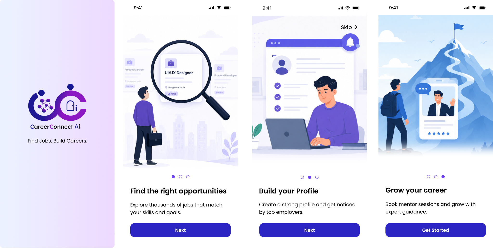
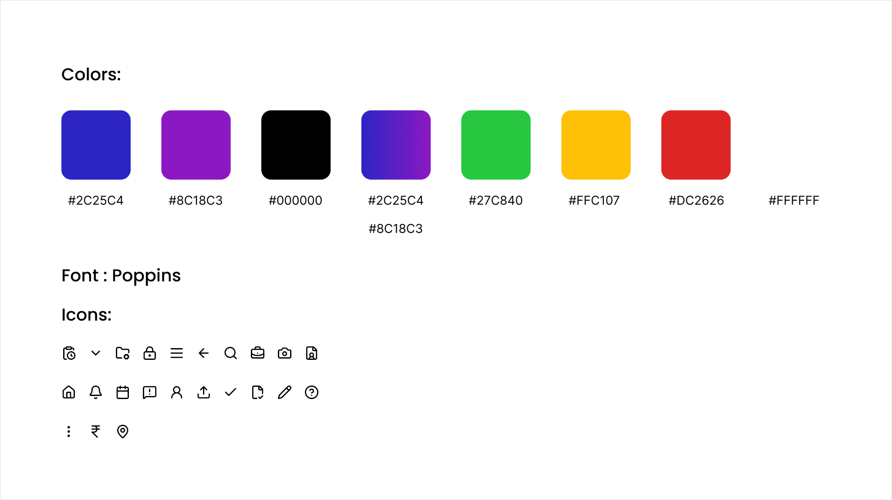

Survey responses
Google Form responses highlighted expectations around job details, profile completion and application status.
UX/UI case study
Job Search & Career Discovery Platform
An AI-powered job search experience designed to help job seekers discover relevant opportunities, manage applications, and navigate their job search with less friction.

01 / Overview
CareerConnect AI brings job discovery, profile building, resume creation, mentoring and application tracking into one connected experience. I worked across research, structure and interface design to make the journey clearer and less repetitive.
02 / The problem
Job seekers need a clearer way to find relevant opportunities and move through applications without repeated effort or uncertainty.
03 / Research
I combined user survey responses, competitive research and synthesis activities to understand where the current journey creates friction.
Google Form responses highlighted expectations around job details, profile completion and application status.
Indeed and Naukri helped identify familiar patterns for discovery, recommendations, profile management and career guidance.

Supporting research, analysis and UX documentation for CareerConnect AI.
04 / Key insights
Finding relevant jobs can be time-consuming.
Users want clearer job information before applying.
Managing multiple applications becomes difficult.
Users need a more structured job-search experience.
05 / User personas
Personas helped keep the product grounded in the different motivations, frustrations and expectations found in the research.


06 / Information architecture
The structure connects discovery, applying, resume building, mentoring and application tracking in one product journey.

07 / User flow
From onboarding to application tracking, the flow maps the paths users need most.

08 / Wireframes



09 / Final UI design
The final screens bring job discovery, profile building, applications and guidance into a single, more confident experience.
10 / Usability testing
Maze usability testing focused on whether users could find relevant jobs, understand job details and recognize application progress. Feedback pointed to the need for clearer status cues, more visible job context and a shorter profile journey.
11 / Design improvements
Profile completion felt long and repetitive.
Progress and existing profile information support a faster journey.
Users were unsure whether an application was submitted.
Clearer confirmation and application tracking improve confidence.
12 / Design system
The design system keeps the product cohesive across screens, states and interactions.

13 / Final outcome
CareerConnect AI brings job discovery, application management and career exploration into a more structured experience, helping users move from searching to applying with greater clarity.
View Prototype